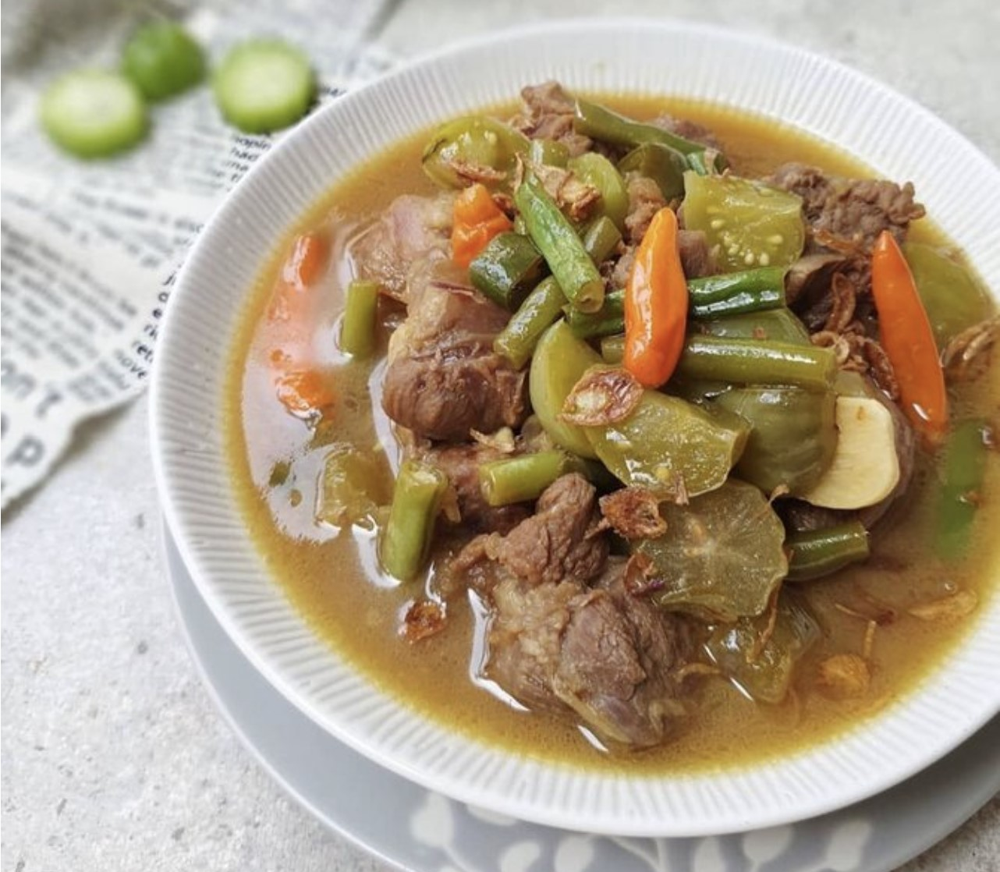

Bahan
- 1/4 daging rebus lalu potong kotak-kotak
- 8 bawang merah
- 6 bawang putih iris-iris
- 4 daun jeruk
- 2 daun salam
- garam, gula pasir, penyedap non msg
Cara Pembuatan
- Tumis bawang merah dan putih, kemudian cabai ijo
- Lalu tuang ke rebusan daging dan masakan semua bumbu kecuali belimbing wuluh dan tomat masak sampai mendidih
- Masukkan buncis
- Masukkan tomat dan belimbing, garam, gula, penyedap, kecap manis.